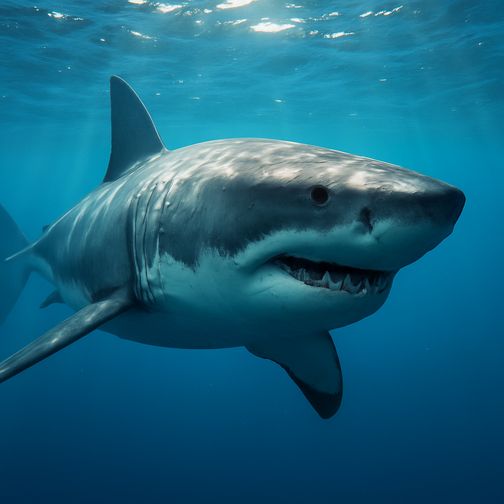
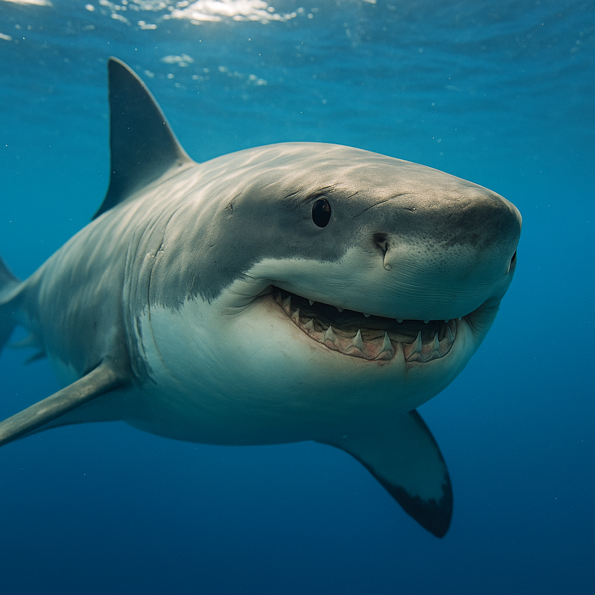
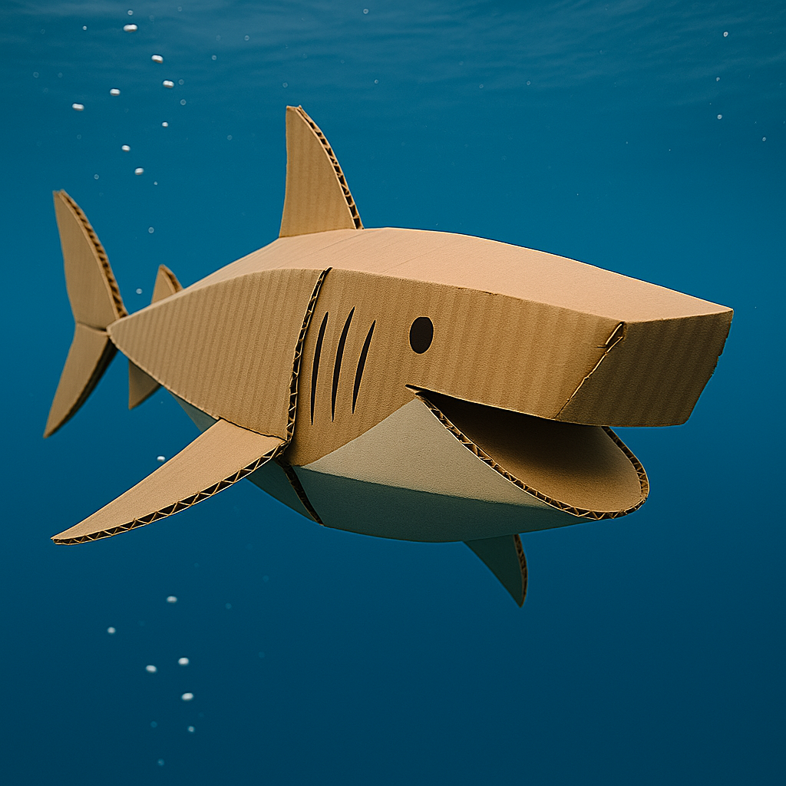
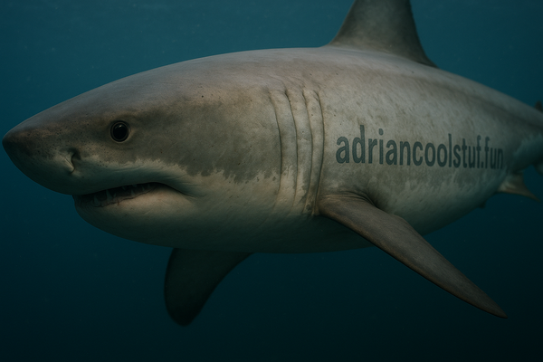

🦈 Snappy Shark
Snappy Shark is an awesome project all about sharks!
This project explores the fascinating world of sharks – their speed, power, and mysteries of the deep sea.
Stay tuned for more facts, fun experiments, and creative shark ideas!
Gallery




What’s next?
- Fun facts about sharks
- Drawing or building your own shark
- Watching cool shark videos
- Shark science experiments
Fun facts about sharks
🦈 Sharks have been around longer than dinosaurs!
🦷 Sharks never run out of teeth—they can grow and lose thousands in their lifetime!
😇 Most sharks are harmless to humans—only a few species are dangerous.
🐋 Whale sharks are the biggest—longer than a school bus, but eat only plankton.
✨ Some sharks can glow in the dark (bioluminescence)!
👃 Sharks can smell one drop of blood in a huge pool of water!
🚀 The fastest shark, shortfin mako, can swim up to 60 km/h!
🐟 Some sharks are tiny—like the dwarf lanternshark, just 20cm long.
🦴 Sharks have no bones—only flexible cartilage.
🌊 Sharks keep the oceans healthy by eating sick and weak animals.
A shark that visited my bedroom and is my guest.